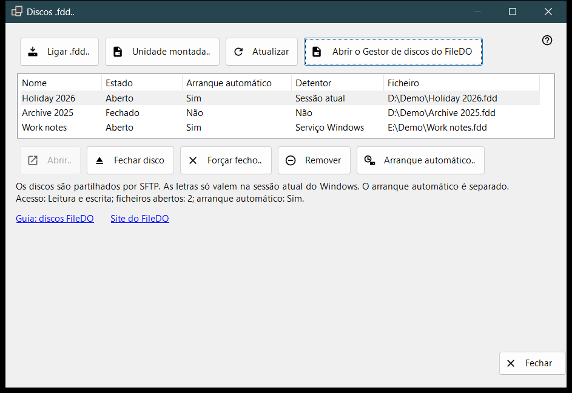
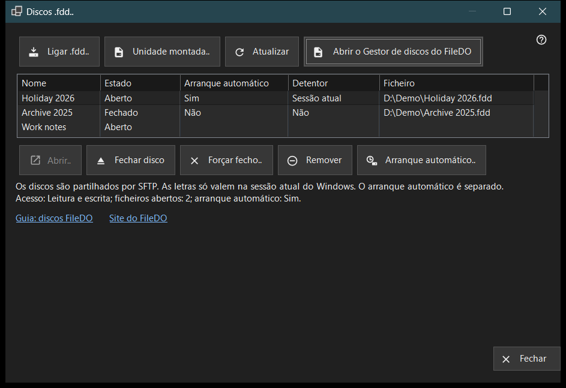

Discos .fdd
Finalidade
Lista os discos .fdd do FileDO que este PC compartilha por SFTP e reúne os comandos de uso diário: conectar um disco, abri-lo ou fechá-lo, deixar de compartilhá-lo e decidir se ele abre junto com o servidor. A janela se abre a partir do item «Discos .fdd..» do menu de adicionar da janela principal do Share Manager.


Nesta ordem
- Clique em «Conectar .fdd..», escolha o arquivo .fdd e confirme a caixa de opções.
- Selecione o disco na lista; a linha abaixo da lista mostra o modo de acesso, os arquivos abertos e a inicialização automática.
- Use «Abrir..» para um disco fechado, «Fechar disco» para um aberto ou «Inicialização automática..» para alterar a abertura automática.
- Clique em «Atualizar» para reler o estado; a janela também o relê sozinha a cada 10 segundos.
- Clique em «Fechar» para sair.
Os elementos
Lista de discos
Cada linha é um disco compartilhado: Nome, Estado (Aberto, Abrindo, Fechando, Fechado, Bloqueado, Erro ou Desconhecido), Inicialização automática, Detentor e o caminho do arquivo .fdd (coluna «Arquivo»). Detentor indica quem mantém o disco aberto: Serviço do Windows, Sessão atual ou Não quando ninguém o faz. Passe o cursor sobre uma linha para ver o caminho completo. A primeira linha é selecionada sozinha, e a linha abaixo da lista mostra o seu acesso (Somente leitura ou Leitura e escrita), o número de arquivos abertos e a inicialização automática. Quando o serviço de compartilhamento não consegue compartilhar discos, a lista e os botões de comando ficam ocultos e essa linha indica o motivo; se o próprio FileDO tiver o disco montado, aparece o link «Abrir o Gerenciador de discos do FileDO».
Conectar .fdd..
Escolha um arquivo .fdd e registre-o para compartilhamento. A caixa de opções pede um Nome, a escolha «Somente leitura» e «Abrir após registrar» (marcada por padrão). Para um disco criptografado pede também a Senha, e pode dar ao disco uma letra de unidade ou manter «Sem letra - apenas compartilhamento». Uma letra dura só até o fim da sessão atual do Windows. Se o disco ainda estiver aberto no FileDO, salve-o e feche-o primeiro lá. Se o registro for bem-sucedido mas o disco não abrir, uma mensagem avisa e o disco permanece na lista como fechado.
Unidade montada..
Escolha uma unidade pronta deste PC, por exemplo um disco que o FileDO já montou. A janela se fecha e a janela principal continua com o seu passo habitual de adicionar pasta para essa unidade.
Abrir, fechar e remover
«Abrir..» volta a abrir um disco fechado, bloqueado ou com erro e pede a senha de um disco criptografado. «Fechar disco» só está disponível para um disco aberto; os clientes perdem temporariamente o acesso e os arquivos abertos têm até 30 segundos para fechar. «Forçar fechamento..» desconecta de imediato os arquivos abertos, por isso dados não salvos podem ser perdidos. «Remover» deixa de compartilhar: o disco é fechado, a sua configuração de inicialização automática e a chave salva são apagadas, e o arquivo .fdd é mantido. Cada uma destas ações pede primeiro confirmação, com Cancelar como resposta padrão.
Inicialização automática
A coluna «Inicialização automática» mostra Sim ou Não para cada disco, sem ser preciso selecioná-lo. Um travessão (-) significa que o serviço de compartilhamento não suporta a inicialização automática; nesse caso «Inicialização automática..» fica desativado. «Inicialização automática..» alterna a configuração após uma confirmação: ao ativá-la, o disco abre junto com o servidor e a senha de um disco criptografado é salva no armazenamento protegido do Windows neste PC; ao desativá-la, essa chave salva é apagada. A configuração é independente do Estado, por isso um disco fechado ou com erro pode ter a inicialização automática ativada. As linhas do FileDO na lista da janela principal também a mostram.
Guia, site e Fechar
«Guia: discos FileDO» e «Site do FileDO» abrem o guia e o site do FileDO, o programa de onde vêm os discos. Se o Gerenciador de discos do FileDO não for encontrado neste PC, a janela indica que se instale o FileDO a partir do seu site. «Fechar» sai da janela; não é possível fechá-la enquanto uma operação de disco estiver em andamento.
Configurações do gerenciador · Configurações de compartilhamento SFTP · Configurações do servidor de troca